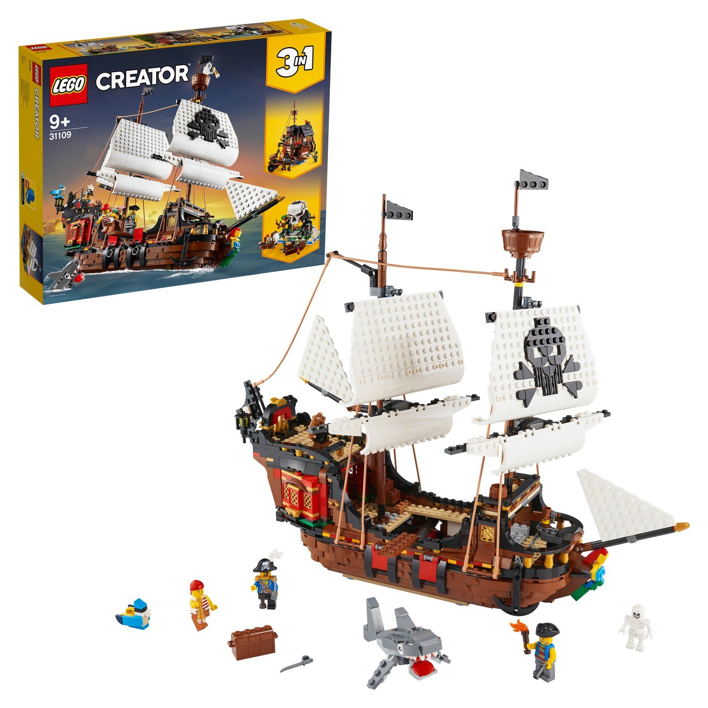
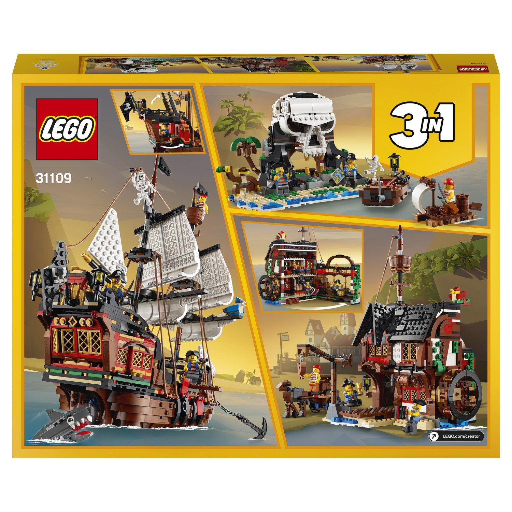
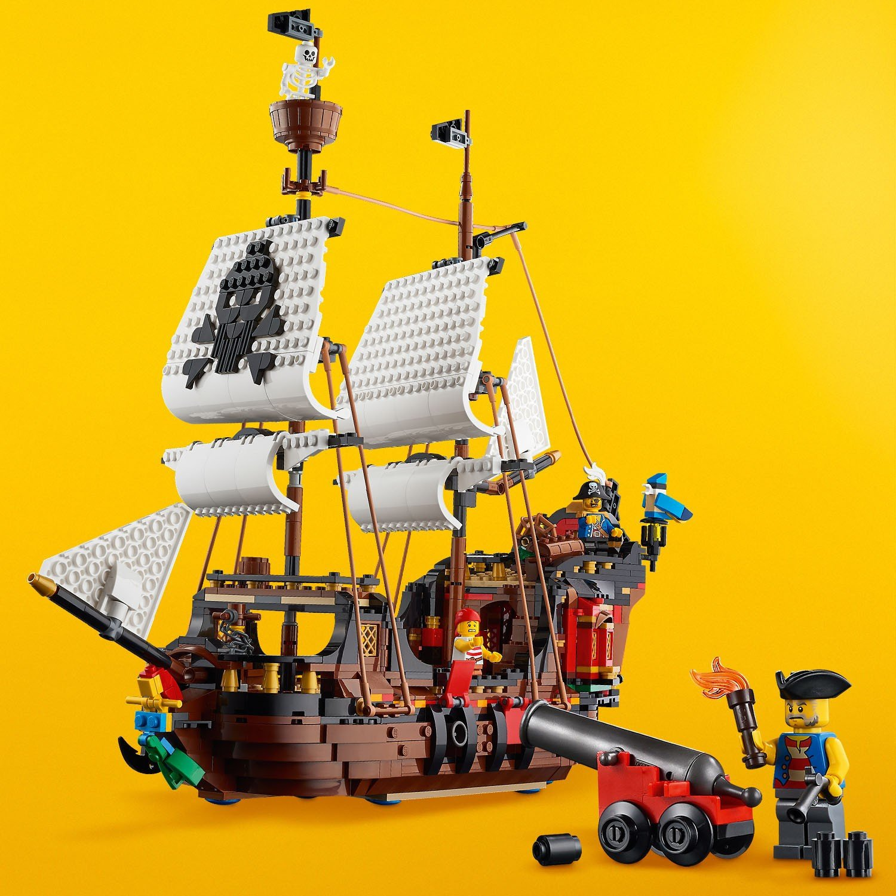
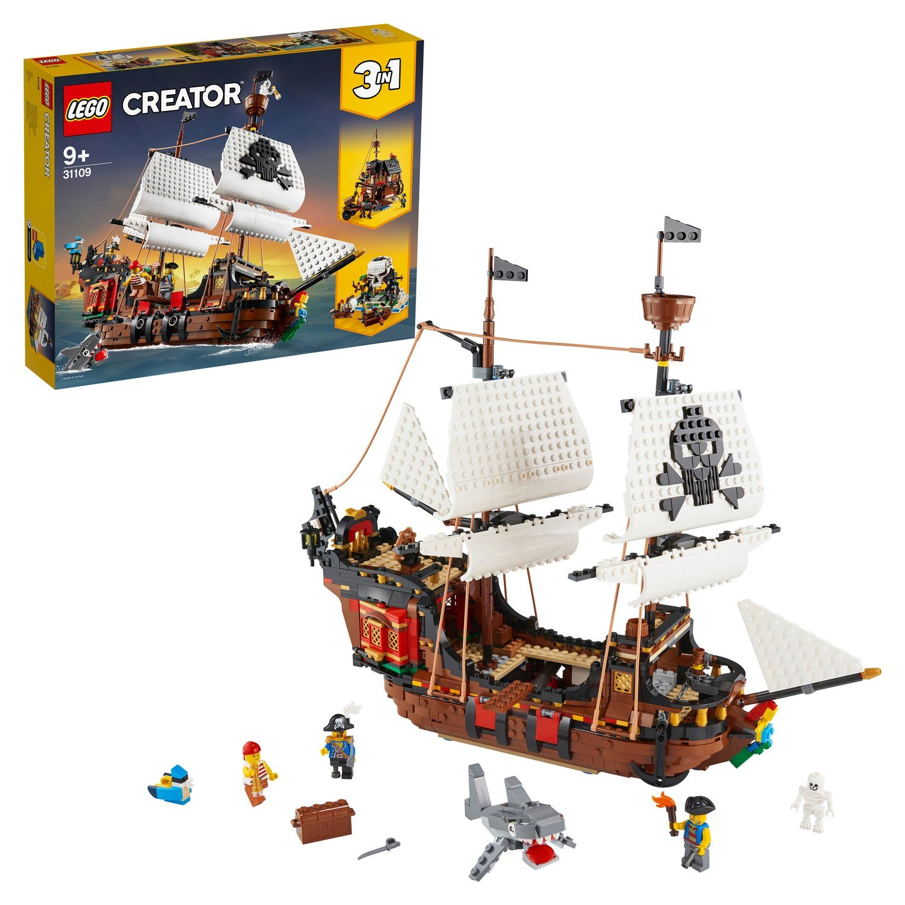
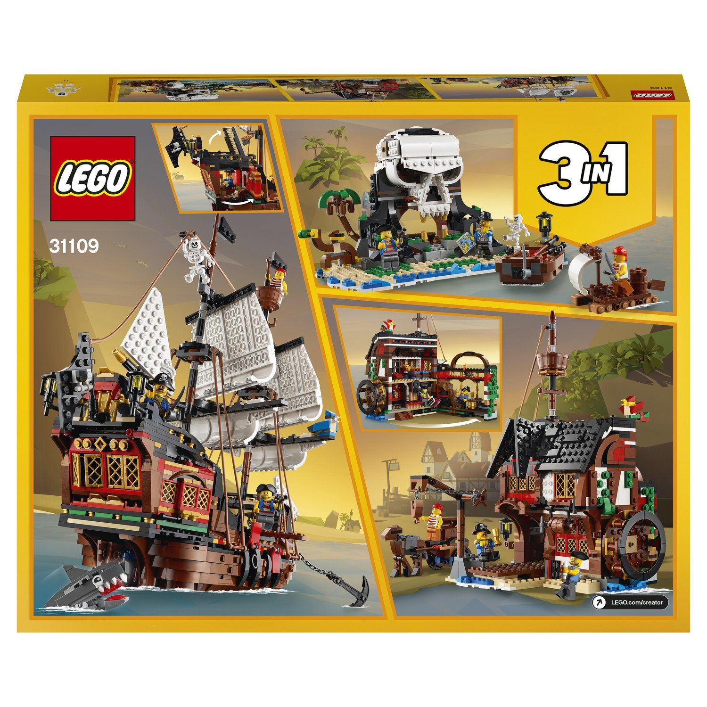
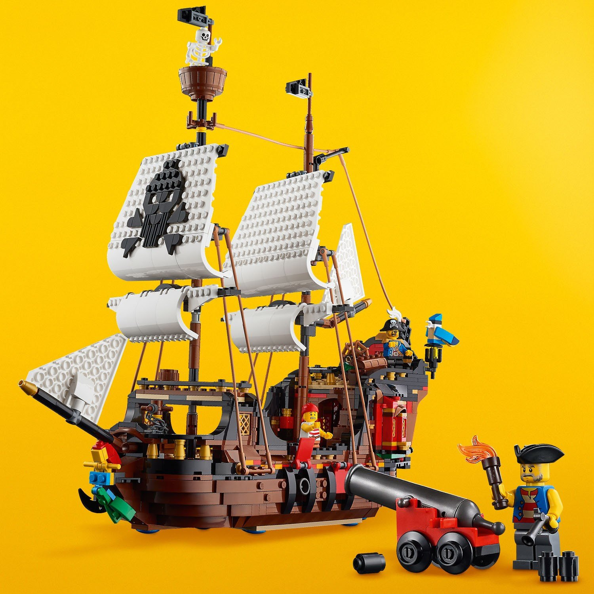

| Описание: | На поиск сокровищ или навстречу приключениям по бушующим морям и океанам сможет отправиться любой ребенок в возрасте от 9 лет вместе с конструктором LEGO Creator 31109 «Пиратский корабль». Воссоздавай сюжеты из любимых мультипликационных или художественных фильмов о пиратах прямо в своей комнате: захватывай корабли противников, отправляйся на поиски клада и приключений. Как только захочется «спокойной жизни» - перестрой классический корабль в типовую пиратскую гостиницу или таинственный остров Черепа. При желании можно создать уникальные, ни с чем не сравнимые модели, дав волю фантазии и проявив всю полноту конструкторских замыслов. Реалистичность и детализированность моделей делают процесс игры более увлекательным, придавая ему познавательный характер. Для полноценного функционирования моделям не требуются дополнительные элементы, поэтому конструктор готов к сборке сразу после распаковки. Набор станет отличным подарком как для мальчика, так и для девочки, которые объединяют в себе тягу к конструированию с любовью к приключениям. |
 




